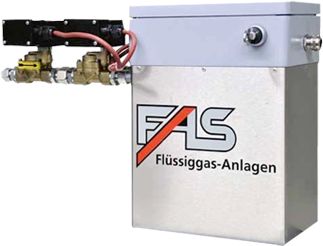
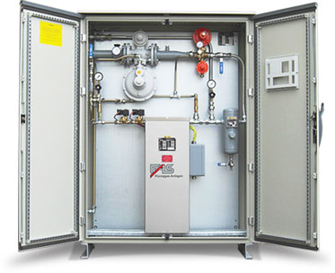
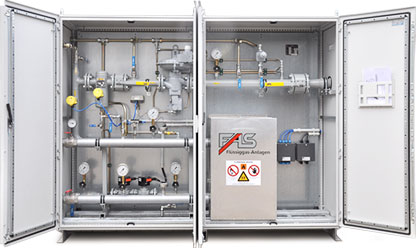

Испарительные установки FAS повышенной надёжности со сроком службы 45 лет
- производство Германия
- гарантия От 5 лет
Испарительные установки предназначены для обеспечения бесперебойной работы газопотребляющего оборудования
Процесс искусственной регазификации осуществляется на высококачественном современном оборудовании FAS
- 1. Вход жидкой фазы в испарительную установку
- 2. Преобразование жидкой фазы СУГ (регазификация)
- 3. Блок автоматически поддерживает параметры работы испарителя, контролирует параметры безопасности и выходную мощность оборудования
- 4. Предохранительный клапан не допускает увеличение давления в испарительной установке свыше рабочих параметров
- 5. Отсекатель жидкой фазы удаляет возможные примеси из газа, а так же защищает систему от попадания тяжёлых фракций и меркаптановых соединений СУГ в газоиспользующее оборудование
- 6. Регулятор среднего давления снижает величину избыточного давления паровой фазы СУГ до рабочих параметров
- 7. Регулятор низкого давления снижает величину избыточного давления до параметров, обеспечивающих стабильную работу газоиспользующего оборудования. Дополнительнос прекращает подачу газа при достижении величины давления свыше установленных параметров. Встроенный фильтр тонкой очистки не допускает попадание механических примесей в систему газоснабжения объекта.
- 8. Выход паровой фазы на газоиспользующее оборудование
- 9. Манометры обеспечивают контроль за рабочими параметрами установки
- 10. Электромагнитные клапаны поддерживают стабильность процесса регазификации
- 11. Фильтрующий элемент предназначен для удаления из газа различных примесей
Модификации и цены
-

Испарители FAS
- Производительность до 40 кг/ч,
- Компактность
- Электропитание – 1-фазное, 230 В/50 Гц.
Испарители FAS конструируются и производятся на заводе компании Flussiggas Anlagen GmbH (FAS), расположенном в городе Зальцгиттер (Salzgitter, Bundesland Niedersachsen).
-

Электрические испарительные установки
- бесперебойная работа в тяжелых климатических условиях;
- стабильная подтвержденная мощность испарительных установок в течение всего срока службы;
- большой срок эксплуатации при низком уровне операционных расходов;
Принцип действия испарителей серии FAS 2000 – нагрев жидкой фазы СУГ тепловыми элементами (трубчатыми электронагревателями, ТЭН), обеспечивающий принудительное парообразование.
-

Жидкостные испарительные установки
- компактная конструкция
- малый вес
- высокая удельная тепловая мощность, благодаря специальному профилированию пластин
Жидкостный (водяной) испаритель FAS 3000 предназначен для перевода жидкой фазы СУГ в паровую. Процесс передачи тепла от теплоносителя (антифриз, горячая вода) к пропан-бутану
Посмотрите, почему нам доверяют крупнейшие производства России
- 5 лет гарантии мы предоставляем на само оборудование и его монтаж потому что уверены в качестве продукции и ценим своих клиентов
- 45 лет - средний срок службы оборудования, которое обеспечивает высокое немецкое качество и подход к производству
- 20 лет успешной работы в России. За это время мы выполнили 38 проектов по организации автономной газификации промышленных предприятий
- 133 официальных представительств и технических бюрокомпании FAS по всему миру
- 7 дней в неделю мы готовы быть на связи с Вами и оказать поддержку даже после завершения проекта
- 365 дней в году Вы можете быть спокойны,наше оборудование работает бес сбоев и мы не раз это доказали
Галерея работ
Название объекта
Система автономного газоснабжения водозаборных и водоотчесных сооружений
Мощность газоуспользующего оборудования 750 кВт
Компания FAS, Flüssiggas-Anlagen GmbH, Зальцгиттер, Германия, была основана в 1975 году как коммерческое предприятие по производству оборудования для сжиженного нефтяного газа (пропан / бутан). В конце семидесятых идея безопасности получила все большее признание для клиентов и пользователей. В соответствии с правовыми нормами и правилами FAS расширила разработку техники безопасности и включила большое количество дополнительных клапанов, фитингов и оборудования в программу поставки, чтобы соответствовать повышенным требованиям в области техники безопасности производителей, поставщиков и дистрибьюторов газа.
За эти годы ФАС разработал и сконструировал новый продукт для рыночных ниш, чтобы соответствовать растущим желаниям и требованиям клиентов. По этой причине также необходимо было несколько раз менять и расширять производственную площадь в Зальцгиттер, чтобы в новом месте на Зальцгиттер / Пайнер-штрассе 217 была предоставлена и реализована возможность приблизиться к реальной рыночной ситуации.
ФАС обладает современными и крупными производственными мощностями с сервисной мастерской и способна производить все инновационные FAS-продукты с максимально возможным качеством и надежным способом при соблюдении сроков поставки.
Продукты, разработанные FAS, производятся на большинстве современных машин высококвалифицированными и эффективными специалистами и имеют очень обширную систему обеспечения качества.
Благодаря дальновидной и успешной политике компании FAS целенаправленно развилась в одного из самых конкурентоспособных и эффективных поставщиков фитингов и оборудования для сжиженного нефтяного газа для автоцистерн и стационарных установок в Европе. Имея более 10.000 различных товаров на складе, FAS обладает одним из самых широких ассортиментов этой отрасли во всем мире.
Мы постоянно стремимся развивать наши продукты и поддерживать стандарты высокого качества, чтобы в будущем мы могли достичь конкурентного преимущества вместе с нашими клиентами.